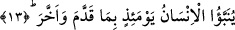

ile aynı anlamı taşımaktadır. Bir başka ifâde ile siz de O’na döneceksiniz. Çünkü o gün
Allah’tan başka ne bir hükümran ve ne de bir mâlik vardır. Ya da Allah’ın dilemesine
döneceksiniz. Allah’ın dilemesi onların istikrar bulacakları noktadır. Ve Allah
dilediğini cennete, dilediğini cehenneme koyacaktır. Yaptığımız bu tefsire göre üzerinde
durduğumuz âyet-i kerîmede yer alan “müstekarr” kelimesi mekân ismi olmuş olur.
13. O gün insana, ileri götürdüğü ve geri bıraktığı ne varsa bildirilir.
“O gün insana önden yapıp yolladığı” gerek hayır gerek şer olsun amelleri “ve
geride bıraktığı” hayır veya şer yapmadığı “şeyler haber verilecek.” O gün insana
ister itâatkâr, ister fâcir/günahkâr olsun herkese amellerinin tartılması esnâsında
amellerin sunulması ve hesâba çekilme sırasında önden yapıp yolladığı ve geride
bıraktığı şeyler haber verilecek. Haber verecek olan Allah’tır veya O’nun emriyle
görevlendirilmiş melektir ya da O’nun açacak olduğu amel defteridir.
Gerek hayır, gerek şer kişinin önden gönderdiği amelleri kendisine haber verilecek ve
hayır göndermişse karşılığında sevap alacak, şer göndermişse cezâya çarptırılacaktır.
Geriye bıraktığı yâni yapmadığı ameller de hayır olsun, şer olsun kendisine haber
verilecektir. Yapmadığı, geriye bıraktığı hayır yüzünden cezâlandırılacak, şer yüzünden
sevaba nâil olacaktır.
Üzerinde durduğumuz bu âyet-i kerîmeyi şöyle anlamak da mümkündür: O gün insana
önden gönderdiği; yâni hayatında iken malından tasadduk ettiği şeylerle geriye bıraktığı
veya vakfettiği ya da vasiyet ettiği şeyler haber verilecektir.
Bir başka ihtimale göre; o gün insana amelinin başı ve sonu haber verilecektir.
Şeyhü’l-İslâm Abdullah Ensârî (k.s.) buyurmuştur ki: Günahı cür’etle, cesâretle
önden gönderirsin, malı da hasretle geride bırakırsın. Günahı tövbeyle yok et, hiçbir şey
geride kalmasın. Malı da sadaka ile önden gönder ki hepsinin sevabı sana kalsın.
Malını önden gönderirsen iyi olur
Göndermezsen arkasından hasretle bakarsın.
Bir hadis-i şerifte Peygamber (s.a.) Efendimiz şöyle buyurmuştur: “Sizden her
birinizle rabbiniz mutlaka konuşacaktır. Kendisi ile rabbi arasında hiçbir tercüman
ve hiçbir perde olmayacaktır. Kişi sağa bakacak orada sâdece daha önce yapıp
gönderdiklerini görecek. Sola bakacak orada da yapıp gönderdiklerini görecektir.
Sonra önüne bakacak yüzüne doğru olan cehennemden başka bir şey görmeyecektir.
O hâlde yarım hurma ile de olsa sadaka vererek cehennemden korununuz” [194]